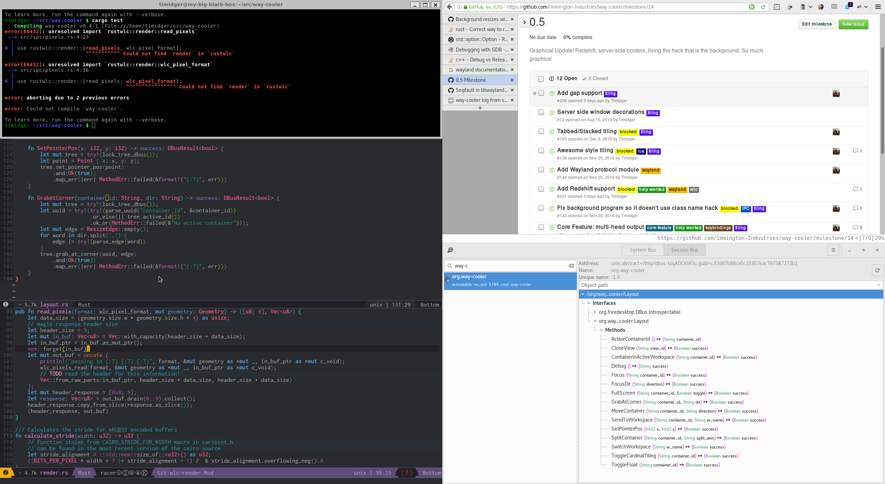

Way Cooler Turns One!
Today marks one year of development on Way Cooler. The first commit was on January 6th, 2016, though true work on Way Cooler didn’t properly begin until several months after that. Most of those first months were spent wrapping wlc and learning about Rust.
The project really came into fruition about a month before this, during the break between semesters. I wanted to work on a project, and a window manager seemed like a very do-able task. I decided on Wayland for a few reasons. The main reason was I didn’t know much about it, except that it was made to replace X. Looking over what scant documentation there was, I realized the best way to understand it would be to write a compositor myself. Another big reason I chose Wayland over X was because I wanted to make a tiling window manager, and there were already plenty of tiling window managers for X. In contrast, the only well known Wayland tiling window managers were sway and orbment.
While thinking about this project, I realized that there was a lot of work I would have to do, probably too much for just me. So I approached Snirk and offered up the idea as a project we could both do together. He was enthusiastic about the idea and was the one who originally suggested we use Rust for the project. I had planned to do it in C originally, but was not married to the idea. So we decided to do it in Rust.
Thanks to Snirk’s influence, a large part of Way Cooler’s design is based off of awesome and its Lua environment. Though I have used awesome in the past, the window manager I am most familiar with is i3. I wasn’t aiming to be a direct clone of i3 (sway does a good enough job at that already), but I did want the tiling controls from i3. In contrast, snirk for the most part doesn’t care as much about how the content is tiled and is more interested in the programmable hooks exposed by the window manager. He has completely tricked out his awesome’s rc.lua, to the point where he had began to design a scheduler for his top bar widgets so that they can each update without delay in the single-threaded Lua environment.
This was very cool, but it was obvious he needed better support from his window manager in order to accomplish his goals. In Way Cooler, the bar is an entirely separate program that communicates to Way Cooler as a client. This allows Way Cooler itself to remain relatively simple but allow us to pack as many features as we want into the bar, including a better framework for making widgets.
The design of Way Cooler has changed immensely since then. At first, we were planning to use Lua for everything, similar to how Awesome did it but split up into multiple files (instead of the gargantuan rc.lua). As we came to understand Wayland better however, we realized that a better design would be to put as much functionality as we could into “client programs”, which are programs that talk to Way Cooler through an IPC mechanism. Way Cooler would expose the functionality that the clients needed, and the clients would be the actual ones to implement the functionality. Lua would still be used for basic configuration and small, one-off scripts that need a tight integration with Way Cooler but not necessarily need to be a full-fledged client program.
Over time the details have changed (We changed to using D-Bus, and we’ve locked down Lua for security reasons and prefer to use a straight yaml file for most configuration options), but the overall design has remained the same. I have a couple of thoughts on this design, and why I think it’s right for Way Cooler:
The user doesn’t have to write Rust
Over the past year that I’ve learned and began to use Rust, I have found it to be an excellent language. It has its flaws, like most, but it really does feel like a smaller and better designed C++.
However, Rust still has a small following compared to C. If the only way to extend Way Cooler was by writing the extensions in Rust, it would not become popular outside of that small niche. This probably has more to do with both the originality and youth of the project than the choice of language, but compared to sway Way Cooler has received far fewer patches from non-core developers. There just simply aren’t as many developers that write Rust and want to take the time to contribute to such a project, so having it as the main extension language doesn’t make much sense.
The user can use any language
Unlike other window managers, such as awesome, the user is not tied to a specific language in order to extend the functionality of the window manager. They are free to use Lua, Python, Haskell, Lisp, or even Rust if they so choose. The only requirement for the language is that it has some kind of D-Bus bindings.
It’s easy to write clients
We wanted client programs to be as cheap as possible to produce for Way Cooler. By using D-Bus, instead of a more ad-hoc IPC system (such as in sway) or a plugin system (like in orbment), we get the benifit of all the tooling and bindings of the D-Bus ecosystem. We don’t need to write client bindings for various languages, as we don’t try to abstract over D-Bus. In contrast, in orbment you’ll need to recompile the entire window manager and in sway you need to understand the protocol that is being used. Thanks to programs like d-feet, it’s even possible to play around with the commands before writing any code, something that you can’t do in sway or orbment.
It makes a Wayland compositor less monolithic
One of the major complaints about Wayland is how basic it is. Wayland is, at its core, really just a protocol between clients (windows) and servers (compositors/window managers). X11 is an actual framework for drawing to the screen, and has much more (insecure) functionality that all window managers get for free. For example, there will never be an xkill for Wayland that works for all WM’s out of the box. As time goes on, this will not be an issue as different protocols stabilize and compositors continue to consolidate under frameworks that can implement this functionality themselves (e.g: libweston and wlc, the latter of which is used by Way Cooler). There may some day be a way-kill, but it will only work on window managers / Wayland frameworks that have implemented the way-kill protocol.
Way Cooler intends to make this as painless as possible. As well as pushing as much functionality out of the compositor as possible and using wlc (which will enable us to get any benefit they decide to add, such as the redshift patch that is currently being reviewed, we also intend to write Wayland protocols that implement old X functionality and, if possible, patch old utilities to work on Wayland.
Next Steps
The next major feature that is being worked on currently is server-side borders. With this feature we will also finally be able to expose the first real customization options to the user beyond simple keybindings. We want the colors to be as configurable as possible, including at runtime (which could mean you can try out a theme, in place, without having to modify any configuration files at all).
The D-Bus API is still very unstable, so unstable that any docs I write would probably be out of date too quickly to be helpful. If you want to see what’s possible now however, you can try it out by running Way Cooler with dbus-launch --exit-with--session way-cooler and inspecting the commands with d-feet.
The top bar is the next major piece of functionality we are going to work on, and will help us define the API better. Since we are using semvar, any backwards incompatible changes we make to the D-Bus api will increment the minor version of Way Cooler (eg 0.x).
When Way Cooler reaches 1.0, the D-Bus API will stabalize. Any backwards-incompatible changes at that point will increment the major version. When Way Cooler reaches 1.x, all “official” client programs (background, top bar, screenshot program, etc.) will also become 1.x (if they weren’t already). In order to reduce confusion, any time Way Cooler updates its major version the official client programs will as well.
Finally, here is an image of Way Cooler in action. This is actually a picture of me working on implementing taking pictures with Way Cooler, the picture was taken by running Way Cooler in X and using scrot (click to expand).
